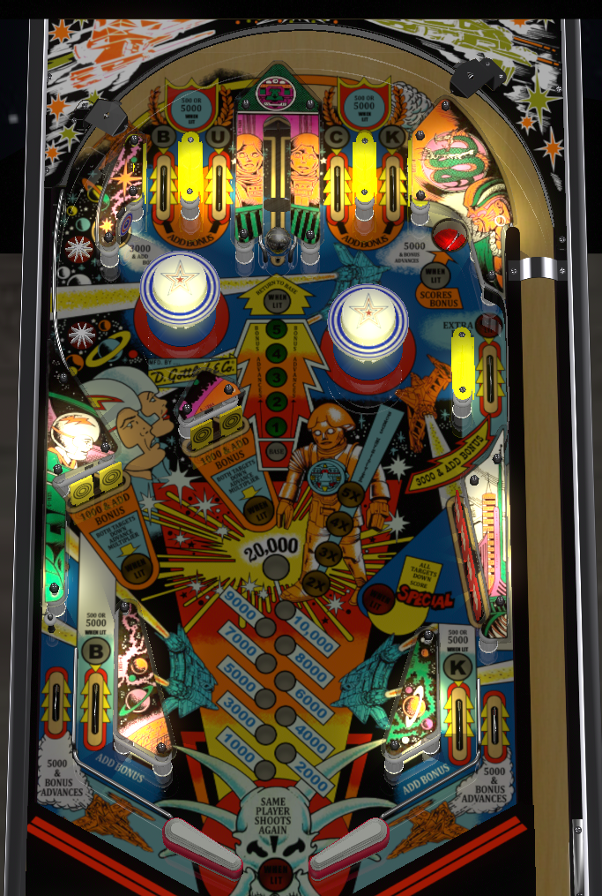

Scoring on Buck Rogers is a 4-step process. First, register a full hit to the captive ball vary-target, preferably on your first try to light as many features around the table as possible. Second, complete yellow drop targets (especially lit ones) to advance bonus multiplier. Third, shoot to the top of the table via the left orbit until base bonus is maxed out at 20,000. Fourth, collect your bonus at the upper right saucer. Lather, rinse, and repeat.
Top lanes score 5,000 points when lit, or 500 when not lit. Roll through a lit lane to unlight it. All top lanes also score 1 bonus advance. Completing BUCK lights the red drop targets in the lower right for a special on the next completion, and resets the red drop targets no matter how many were down. Whether specials are meaningful to you or not, there's no reason not to plunge one of the lanes lit for 5,000 points- preferably the U or C, since the B and K can also be collected on the in lanes.
This captive ball governs most features in the game. It can be hit from the left flipper, but it's far easier to do so from the right. Good nudging and reactions are required after any hit to this feature, as the return feed is very likely to go directly down the middle. The center peg between the flippers does a lot of heavy lifting here, and if that peg has been removed for you, try not to hit the captive ball in the dead center so that the rebound comes with some amount of angular momentum.
The further the captive ball pushes the vary-target in, the higher number will be lit on the playfield. The vary-target will stay partially pushed in until the end of the ball or until a full hit is registered. While a number is lit on the playfield, the upper right saucer and out lanes will advance your bonus the number of times indicated. When the vary-target is pushed all the way back, Return to Base is initiated, and the ensuing awards depend on how many attempts it took to push the vary-target all the way back.
An "attempt" is only counted when the vary-target is pushed up to a new number. The "attempt" system seems to occasionally be faulty, meaning a vary-target that took two or three attempts to fully push back may still light all of the features associated with a one-attempt completion.
The saucer scores 5,000 points as well as the number of bonus advances currently lit in front of the captive ball, which can be anywhere from 0 to 5 inclusive. If the base bonus is maxed out at 20,000 points, this saucer will collect the entire bonus with multiplier, after which the base bonus will be reset to 1,000 points while the multiplier is kept intact. If the bonus advances from the initial saucer award are enough to bring the base bonus up to 20,000, the bonus collect will be triggered immediately and automatically. It's not too uncommon on some copies of the game to briefly get into a loop where the saucer kickout shoots directly at a bumper, which pops the ball back into the saucer for compounding points.
Score 1,000 points in a 3-ball game, or 100 points in a 5-ball game.
Just above and left of the leftmost pop bumper is a standup target worth 3,000 points and one bonus advance.
Scores 3,000 points and a bonus advance. Can be lit for extra ball with a one-attempt completion of the captive ball.
Each target down scores 1,000 points and a bonus advance. Clearing all 4 drop targets across the two pairs advances the bonus multiplier (or 5,000 points, if bonus multiplier is maxed at 5x) and resets all targets. If one or both pairs has been lit via a captive ball award, clearing just the two targets in that pair will also advance bonus multiplier. Returning to Base with a complete captive ball shot in one or two attempts will reset both pairs of the yellow drop targets, regardless of how many of them were down already if any.
Each target down scores 500 points. Completing the bank scores one bonus advance plus 10,000 points in a 3-ball game or 5,000 points in a 5-ball game, and resets the targets. Completing the BUCK top lanes instantly resets the red drop targets regardless of their current state and lights the bank to award a Special with the next completion.
Buck Rogers has a conventional in/out lane setup. In lanes award the B and K in BUCK, and score 5,000 points and a bonus advance when lit, or 500 and a bonus advance when not lit. Out lanes score 5,000 points and bonus advances equal to the number currently lit in front of the captive ball (between 0 and 5).
By default, there is a center peg between/below the flippers. It tends to save many center drains caused by a ball that loses all horizontal momentum following a captive ball shot.
Base bonus is increased once by top lanes, in lanes, the upper right side lane, and the upper left standup target. Base bonus is increased multiple times by the out lanes and upper right saucer, equal to the number lit in front of the captive ball. Bonus multiplier is advanced by yellow drop targets as described above. Max bonus is 5x 20,000 = 100,000 points. Bonus can be collected mid-ball at the upper right saucer; it is lit for bonus collect whenever the base bonus is maxed out at 20,000 points, or immediately after a one-attempt completion of the captive ball. Collecting the bonus resets the base bonus value, but not any collected multipliers. Neither base bonus nor multiplier can ever be carried from ball to ball.